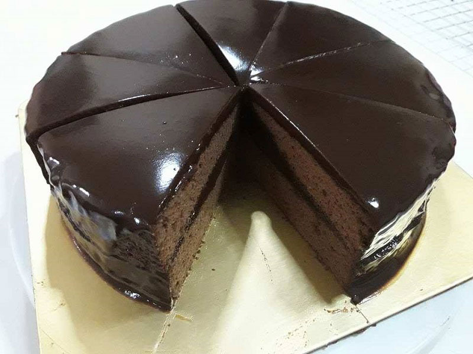
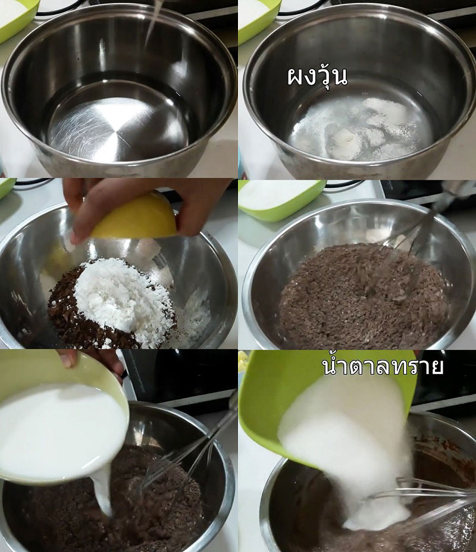
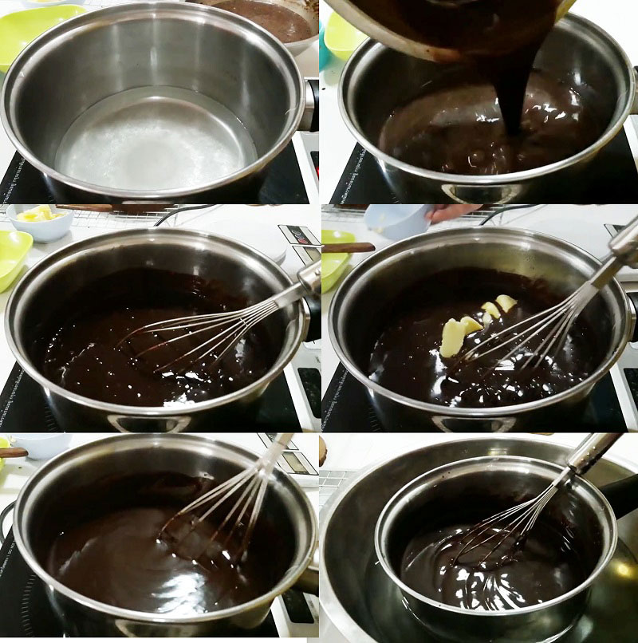
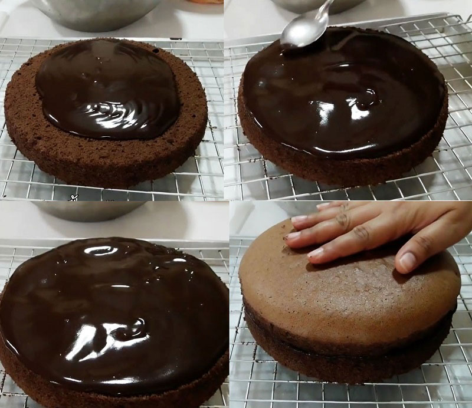
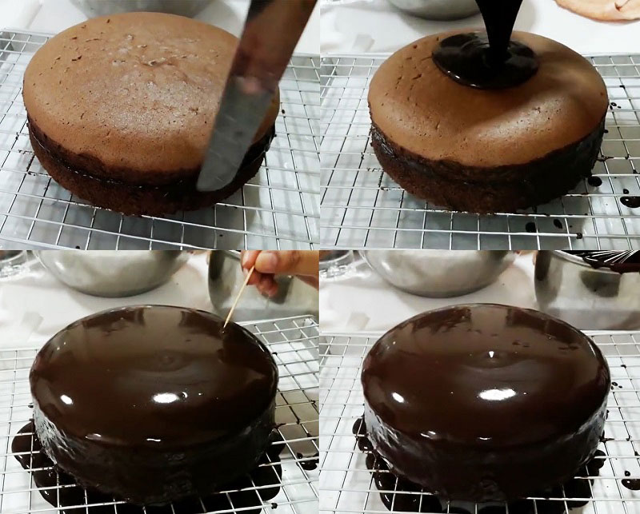
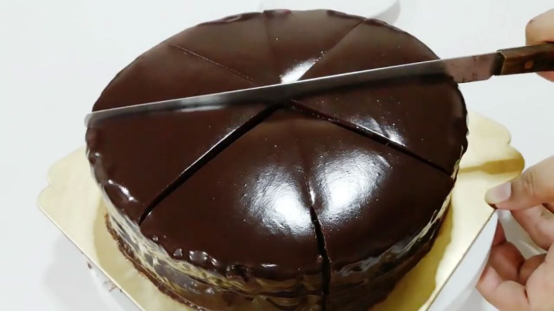

เค้กช็อกโกแลต 1 ชิ้น ให้พลังงานประมาณ 275 กิโลแคลอรี
เค้กช็อกโกแลต 1 ชิ้น ให้พลังงานประมาณ 275 กิโลแคลอรี
ทำไว้ติดตู้เย็นกินล้างปาก พบกับเค้กช็อกโกแลตหน้านิ่ม สูตรขนมอร่อยนุ่มราดช็อกโกแลตหน้านิ่มเพิ่มความฟิน หน้าตาดีจนเพื่อนยังขอชิม
จากที่เคยซื้อจากเค้กหน้านิ่มช็อกโกแลตจากร้านเค้กชื่อดัง แม้จะอร่อยหนักมากแต่ชิ้นหนึ่งราคาเฉียดร้อย ถ้าจะซื้อหลายชิ้นคงกระเป๋าแบน วันหยุดมีเวลาว่างลองมาทำเองดีไหม กระปุกดอทคอมขอนำเสนอวิธีทำเค้กช็อกโกแลตหน้านิ่ม สูตรจาก ครัวป้ามารายห์ มาพร้อมวิธีทำเค้กช็อกโกแลตและหน้านิ่มช็อกโกแลต พอทำเสร็จก็ตัดแบ่งแจกเพื่อนฝูงได้เลย หรือใครจะแต่งหน้าเพิ่มด้วยผลไม้สดและครีมสดก็ตามชอบเลยจ้า
ชวนทำเค้กช็อกโกแลตหน้านิ่ม ของโปรดของใครหลายคน เอาใจคนรักช็อกโกแลตอีกแล้ว โดย ครัวป้ามารายห์
ส่วนผสม เค้กชิฟฟ่อนช็อกโกแลต (พิมพ์ขนาด 3 ปอนด์)
• ส่วนผสม ไข่แดง
• ไข่แดง 6 ฟอง
• น้ำตาลทราย 30 กรัม
• นม 80 กรัม
• น้ำมันพืช 65 กรัม
• กลิ่นวานิลลา 1 ช้อนชา
• แป้งเค้ก 90 กรัม
• ผงฟู 1/2 ช้อนชา
• ผงโกโก้ 20 กรัม
• เกลือเล็กน้อย
ส่วนผสม ไข่ขาว
• ไข่ขาว 6 ฟอง
• ครีมออฟทาร์ทาร์ 1/2 ช้อนชา
• น้ำตาลทราย 80 กรัม
ส่วนผสม หน้านิ่ม
• ผงวุ้น 1 ช้อนชา
• น้ำ 250 กรัม
• ผงโกโก้ 30 กรัม
• แป้งข้าวโพด 30 กรัม
• นมสดหรือนมจืด 250 กรัม
• น้ำตาลทราย 160 กรัม
• กลิ่นวานิลลา 1 ช้อนชา
• เนยสดเค็ม 70 กรัม
วิธีทำชิฟฟ่อนช็อกโกแลต
1. ตีไข่แดงพอแตก ใส่น้ำตาลทรายลงไปตีจนเข้ากัน เติมนมกับน้ำมันพืชแล้วคนจนเข้ากัน เติมกลิ่นวานิลลาแล้วคนจนเข้ากัน ใส่แป้งที่ร่อนพร้อมผงฟู ผงโกโก้ และเกลือลงไป ตะล่อมจนเข้ากัน แต่อย่านานมาก เพราะเค้กจะเหนียวได้
2. ตีไข่ขาวกับครีมออฟทาร์ทาร์จนเป็นฟองหยาบ แล้วค่อย ๆ ทยอยใส่น้ำตาลทรายลงไป แบ่งใส่สัก 3 ครั้ง ตีจนตั้งยอดอ่อนถึงกลาง อย่าตีจนตั้งยอดแข็ง เวลาเอาไปผสมกับส่วนของไข่แดงจะทำให้คนเข้ากันยากมาก เพราะต้องใช้เวลาตะล่อมนาน ทำให้ฟองอากาศยุบตัวเยอะ ซึ่งเป็นสาเหตุหนึ่งที่ทำให้เค้กไม่ฟู พอตั้งยอดแล้วก็ตักเมอแรงค์ไข่ขาวสัก 1/3 ส่วนมาตะล่อมกับส่วนผสมของไข่แดง ตะล่อมเบา ๆ จนเข้ากัน หลังจากนั้นก็ใส่เมอแรงค์ไข่ขาวส่วนที่เหลือลงไปจนหมด แล้วตะล่อมจนเข้ากันดี
3. พอเข้ากันแล้วเทใส่พิมพ์ขนาด 3 ปอนด์ที่เตรียมไว้ เคาะพิมพ์เบา ๆ สัก 1-2 ครั้ง แล้วนำไปอบบนถาดที่เทน้ำร้อนเตรียมไว้ที่อุณหภูมิ 140-150 องศาเซลเซียส เป็นเวลา 60 นาที ใครชอบหน้าเข้มกกว่านั้นก็เพิ่มอุณหภูมิเป็น 160 องศาเซลเซียสก็ได้ ต้องดูเตาอบบ้านแต่ละคนด้วย ไม่เช่นนั้นหน้าอาจจะไหม้ก่อน พออบเสร็จแล้วก็พักไว้ในพิมพ์ก่อนประมาณ 10-15 นาที แล้วนำเค้กออกมาพักบนตะแกรง
วิธีทำชิฟฟ่อนช็อกโกแลต
วิธีทำช็อกโกแลตหน้านิ่ม

ผสมผงวุ้นกับน้ำแล้วพักไว้ 10 นาที
หลังจากนั้นนำผงโกโก้และแป้งข้าวโพดเทลงชามผสม ใช้ตะกร้อคนให้เข้ากัน
แล้วค่อย ๆ เติมนมลงไป คนส่วนผสมให้เข้ากัน
หลังจากนั้นใส่น้ำตาลทรายกับกลิ่นวานิลลาลงไปผสมจนเข้ากัน
นำหม้อที่ผสมน้ำกับผงวุ้นพักไว้ตั้งไฟกลางจนเดือดและผงวุ้นละลาย หลังจากนั้นนำส่วนผสมช็อกโกแลตเมื่อสักครู่เทลงไป คนจนข้นขึ้น พอข้นแล้วก็ดับเตาแล้วเติมเนยลงไป คนให้เข้ากัน นำออกมาคนต่อข้างนอก อย่าคนเร็วหรือแรงไปเพราะจะทำให้เกิดฟองอากาศเยอะนะคะ ถ้าอยากให้อุ่นเร็วก็นำไปคนในชามน้ำแข็งหรือน้ำเย็นจัดค่ะ

พออุ่นแล้วก็ราดลงแผ่นเค้กที่หั่นแบ่งครึ่งเตรียมไว้ ปาดให้ทั่วเค้ก พักให้เซตตัวสัก 5 นาที หลังจากนั้นก็นำอีกแผ่นมาประกบเข้าด้วยกัน

ปาดด้านข้างให้เรียบ แล้วนำหน้านิ่มส่วนที่เหลือราดหน้าลงไป แล้วใช้ไม้ปลายแหลมเจาะฟองอากาศ เพื่อให้หน้าเรียบสวยงาม พักให้เซตตัวสัก 30 นาที



หลังจากนั้นก็นำมาตัดเสิร์ฟได้ค่ะ
วิธีทำหน้านิ่มช็อกโกแลต
ติดตามครัวป้ามารายห์ได้เพิ่มเติมที่ เฟซบุ๊ก ครัวป้ามารายห์
พร้อมยัง ? ใครอยากทำเค้กช็อกโกแลตหน้านิ่มไปเปิดเตาอบรอเลยค่ะ แต่ถ้าอุปกรณ์ครัวไม่พร้อมก็ดัดแปลงเป็นเค้กหม้อหุงข้าวหน้านิ่มก็ได้นะคะ
ขอขอบคุณข้อมูลและภาพประกอบจาก
ครัวป้ามารายห์
Copyright © EAT&EAT nc. สงวนลิขสิทธิ์